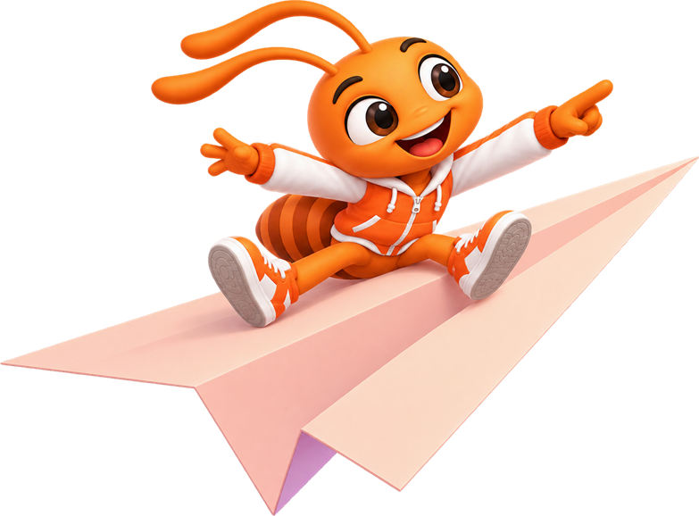

Ứng dụng kết nối hàng xóm trong khu
Một khu,
một nhà.
Mua món ngon, đặt dịch vụ hay nhờ một tay — AntGo kết nối bạn với chính những người hàng xóm quanh khu.



Mua món ngon, đặt dịch vụ hay nhờ một tay — AntGo kết nối bạn với chính những người hàng xóm quanh khu.